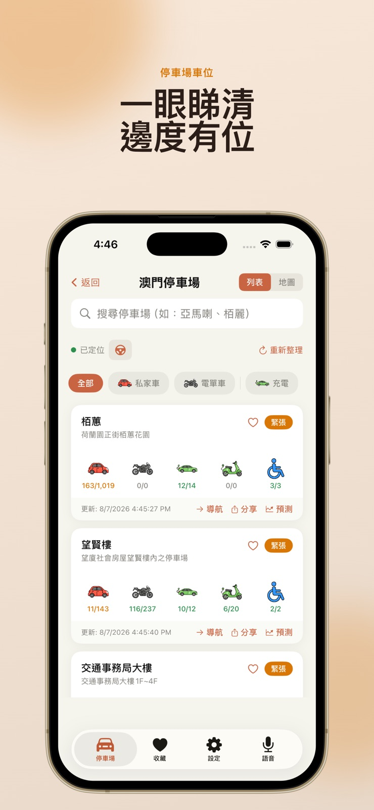
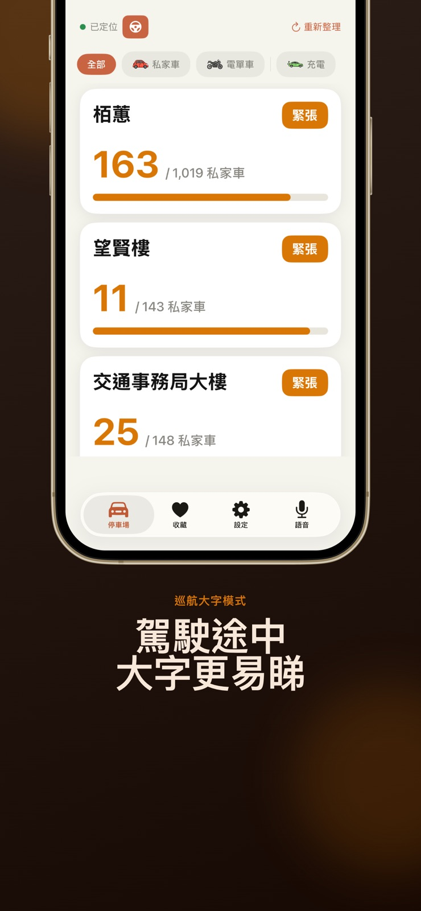
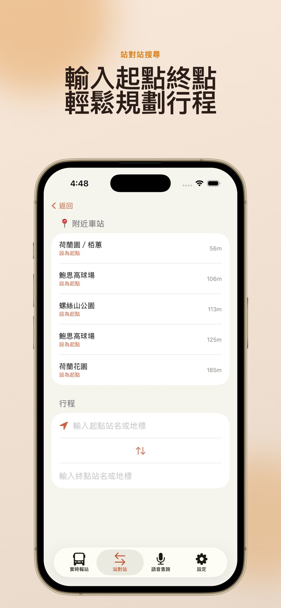

收藏與導航
收藏常用停車場，並開啟導航前往目的地。
MACAO PARKGO
整合澳門巴士到站資訊、路線與停車場車位，讓每次出行更從容。



BUS ARRIVALS
查看即時到站時間、附近站點與途經路線。收藏常用路線，出門前做好準備。
PARKING
以地圖或列表比較附近停車場，查閱私家車、電單車及充電車位資訊。
ROUTE PLANNING
輸入起點與終點，查找合適的巴士路線，讓行程安排更加清晰。

收藏常用停車場，並開啟導航前往目的地。
透過 iOS 即時動態、動態島及小工具掌握收藏停車場狀態。
參考歷史車位趨勢，安排出行時間。
A CLOSER LOOK
官方 App Store 截圖，點選即可放大。
部分功能因平台及版本而異。車位與到站資訊僅供參考，請以現場狀況為準。